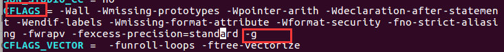
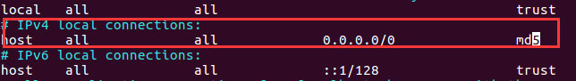

PostgresSQL 介绍、简史等信息可以参考http://www.postgres.cn/docs/10/ 前言部分
安装依赖库
在Ubuntu系统中安装：
sudo apt-get install libreadline6 libreadline6-dev
sudo apt-get install zlib1g-dev
sudo apt-get install libssl-dev
sudo apt-get install systemtap-sdt-dev
sudo apt-get install firewalld
- make版本3.80或以上
make --version
- GCC编译器
- GNU Readline库：它允许psql记住你输入的每个命令，这样就可以通过上下方向键快速输入之前的命令，默认开启，也可以通过编译参数--without-readline来禁止它，建议保留默认。
- Zlib库
源代码包
源码包下载，下载地址 https://www.postgresql.org/ftp/source/
版本postgresql 9.6.12
安装
解压缩
tar -zxvf postgresql-9.6.12.tar.gz cd postgresql-9.6.12
生成makefile文件
- ./configure --prefix=/home/username/postgresql --enable-debug
- 其中--prefix是指定软件的安装路径，--with选项是指安装本文件依赖的库文件。如有不清楚可以自己学习下configure命令的相关参数
修改
makefile.global- 这里要注意的是，由于我希望后面能跟踪代码的运行路径，所以我要在编译configure的时候加上--enable-debug的选项，并且修改src/Makefile.global文件：CFLAGS = -g
- 
- 其中参数"-O2"是编译器的优化选项，如果打开了，代码的执行顺序会改变，使得追踪起代码来比较困难。当然去除了优化选项，编译后的可执行文件会比较大，而且会比较慢，所以不太适合生产环境。所以切记这个操作仅仅是在学习的时候而设置的。
重新configure
./configure --prefix=/home/username/postgresql --with-perl --with-tcl --with-python --with-openssl --with-pam --without-ldap --with-libxml --with-libxslt --enable-thread-safety --with-wal-blocksize=16 --with-blocksize=16 --enable-dtrace --enable-debug
（注释：命令解释参考http://www.postgres.cn/docs/9.6/install-procedure.html）
或者只指定debug
- ./configure --prefix=/home/username/postgresql --enable-dtrace --enable-debug
执行：make
安装：make install
配置环境变量
- vi ~/.bashrc
- 插入：
export PG_HOME=/home/username/postgresql、export PATH=PGHOME/bin:PG_HOME/bin:PGHOME/bin:PATH
source ~/.bash_profile
目录授权
- mkdir /home/username/postgresql/data
- mkdir /home/username/postgresql/log
创建log文件：
- touch /home/username/postgresql/log/server.log
- sudo chown -R username:username /home/username/postgresql/
启动
- 初始化 initdb -D /home/username/postgresql/data
- 执行完成后显示 pg_ctl -D /home/username/postgresql/data/ -l logfile start 提示表示成功
其中data目录下：base目录是表空间目录，global目录是相关全局变量目录, pg_hba.conf是访问控制配置文件，postgresql.conf是postgresql主配置文件
- 可选配置（可配可不配），在
data目录下修改- 修改pg_hba.conf。修改为如下（0.0.0.0/0表示信任来自所有id连接的客户端，加密方式才有md5）：
- 
- 修改postgresql.conf。localhoat改为*，表示监听所有网络连接。
- 防火墙开放端口
- sudo firewall-cmd --zone=public --add-port=5432/tcp --permanent
- sudo firewall-cmd --reload
- 启动PG
- pg_ctl -D /home/username/postgresql/data/ -l /home/username/postgresql/log/server.log start
- 修改pg_hba.conf。修改为如下（0.0.0.0/0表示信任来自所有id连接的客户端，加密方式才有md5）：
- 连接： psql -d postgres